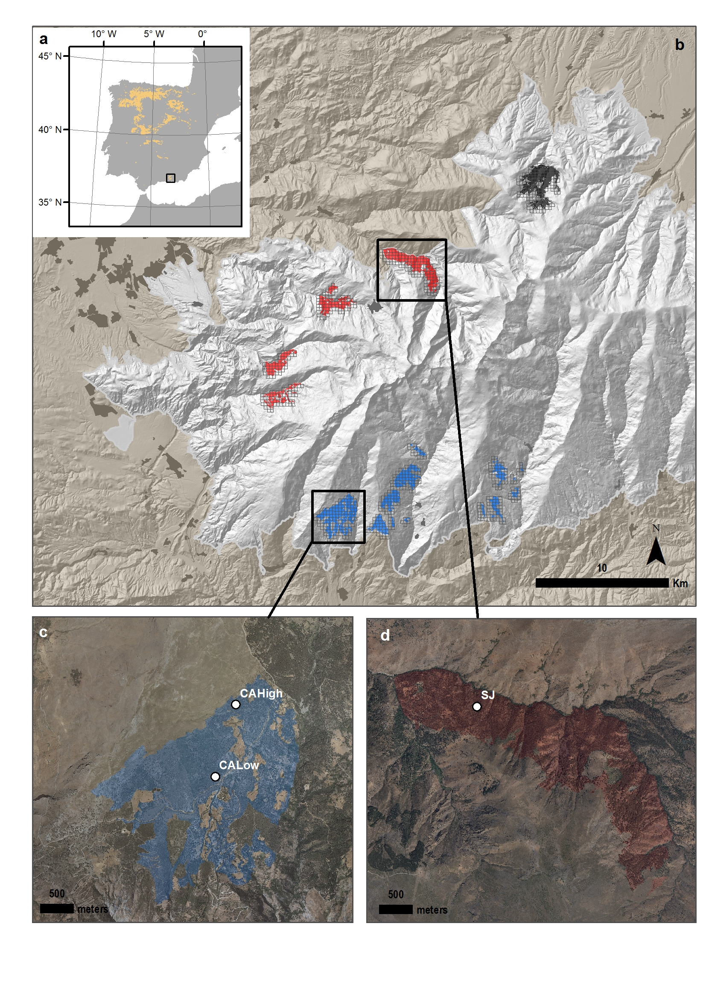
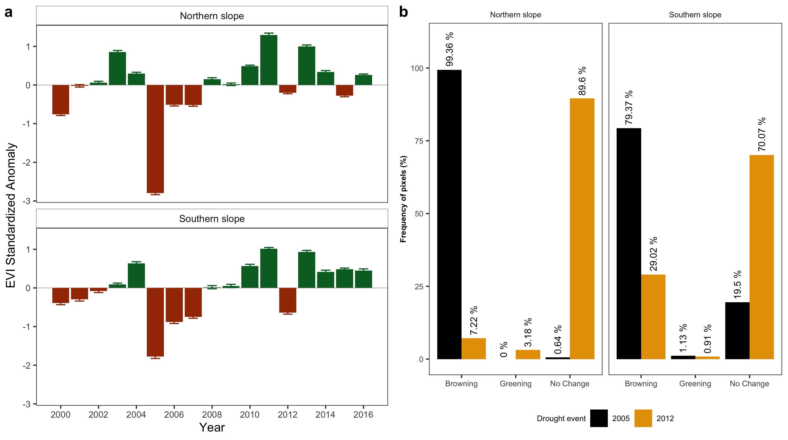
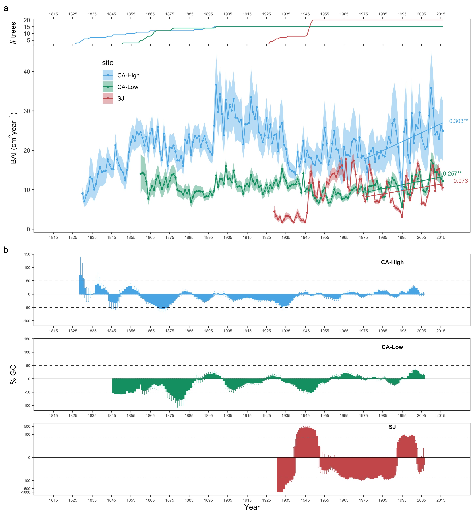
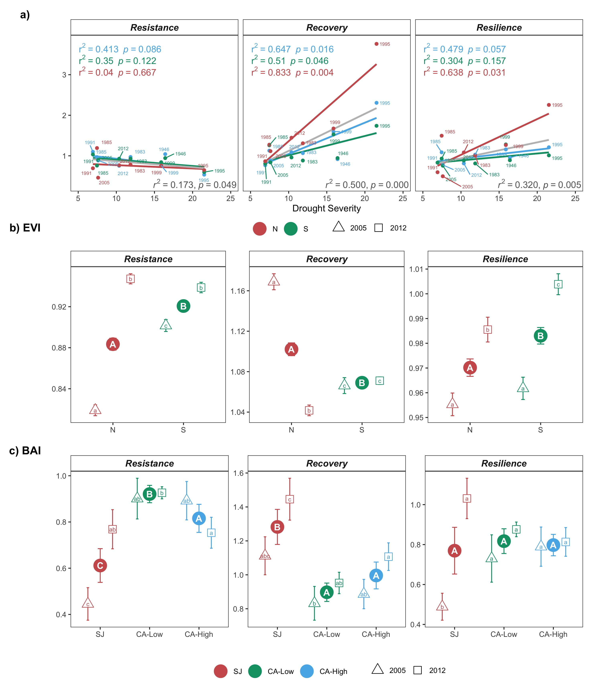

6 Land-use legacies and climate change as a double challenge to oak forest resilience: mismatches of geographical and ecological rear edges
Antonio J. Pérez-Luque; Guillermo Gea-Izquierdo & Regino Zamora. 2020. Ecosystems 10.1007/s10021-020-00547-y
Abstract
Global change challenges ecosystems in xeric locations transformed by intensive human use. Resilience to drought of relict Mediterranean Quercus pyrenaica populations in the southern Iberian Peninsula was analyzed in relation to historical records of land use, combining dendroecological growth of adult trees and greenness (EVI) as proxies for secondary and primary growth. The growth trends reflected a strong influence of old land-use legacies (e.g. firewood removal) in the current forest structure. Trees were highly sensitive to moisture availability, but both primary growth and secondary growth expressed high resilience to drought events over the short and the long term. Resilience and the tree growth response to climate followed a water-stress gradient. A positive growth trend since the late 1970s was particularly evident in mesic (colder and wetter) high-elevation stands, but absent in the most xeric (warmer and drier) stands. The high values of resilience observed suggest that the studied Q. pyrenaica populations are located in a geographical but not a climatic or ecological rear edge. Resilience of oak stands to drought events was not spatially homogeneous across the mountain range, due to differences in ecological conditions and/or past management legacies. This is particularly relevant for rear-edge populations where topographic and biophysical variability can facilitate the existence of refugia.
6.1 Introduction
The response of species to changing environments (e.g. distributional shifts) can be determined largely by population responses at range margins (Hampe and Petit 2005). Peripheral populations are usually considered more vulnerable compared with populations at the center of a species’ range [i.e. center-periphery hypothesis; Sagarin and Gaines (2002); Pironon et al. (2017)]. Geographically marginal populations have often been assumed to represent ecologically marginal populations. This means lower performance, higher vulnerability, and thus higher risk of extinction than for populations at the core of the species’ range (Rehm et al. 2015, Pironon et al. 2017, Vilà-Cabrera et al. 2019). Nonetheless, recent reviews report that species- and population-specific responses do not always support this hypothesis (Sexton et al. 2009, Abeli et al. 2014, Oldfather et al. 2020). This is partly because a rear-edge is a multidimensional concept including an ecological (i.e. climatic and edaphic), a geographical, and a genetic component (Vilà-Cabrera et al. 2019), but also an anthropogenic dimension (i.e. land-use). In this respect, to fully understand changes in distribution and abundance of species as a consequence of global change, it is crucial to identify and understand mismatches between the geographical and the ecological rear edges (Vilà-Cabrera and Jump 2019).
Limits of species distribution are strongly determined by climatic factors and biotic interactions (Gaston 2009, Sexton et al. 2009). Climate change is expected to cause major shifts in the distribution and abundance of plant communities, and signs already indicate that more intense and longer droughts are altering forest dynamics (Allen et al. 2010). Drought frequency and severity have increased in recent decades, with a trend towards drier summers, particularly for Southern Europe (Vicente-Serrano et al. 2014, Stagge et al. 2017). In this climatic-change context, population loss and range retractions are expected in boreal, temperate, and Mediterranean species at the lowest latitudes and elevations, as well as in drought-prone areas of a species’ distribution, i.e. the rear edge. The rear-edge populations are likely to be more sensitive to minor climatic and microtopographic variations and therefore the effects of droughts are expected to be particularly noteworthy (Hampe and Petit 2005, Vilà-Cabrera et al. 2019).
It is often overlooked that human activity constitutes a driver of change as powerful or even more powerful as natural drivers, i.e. natural variation in climate, particularly for regions with long land-use history such as the Mediterranean Region (Navarro-González et al. 2013, Doblas-Miranda et al. 2017). In these areas, the susceptibility and response of ecosystems to climate change are conditioned by legacies of historical land-use activity (Munteanu et al. 2015, Mausolf et al. 2018). The past land-use legacies interact with recent human-caused climate disturbances and may confound their interpretation (Foster et al. 2003). For example, recent works showed that a quarter of current forests in the Iberian Peninsula, are growing on former agricultural and grazing land abandoned after the 1950s (Vilà-Cabrera et al. 2017). Consequently, anthropogenic habitat modification and its legacies represent a critical dimension of marginality as they may intensify, confound or delay climate-driven population decline at rear edges (Vilà-Cabrera and Jump 2019, Sánchez de Dios et al. 2020). In this context, our work seeks to identify the impacts and responses to natural (e.g. severe drought) and human disturbances (e.g. logging) on oak forests at their southern geographical range. A historical perspective should help us to interpret the responses of ecosystems to disturbances (Foster et al. 2003), particularly regarding marginal rear-edge populations (Vilà-Cabrera et al. 2019).
The assessment of resilience to climate and human disturbances provides critical information concerning the capacity of forests to maintain their structure and render valuable ecosystem services. Resilience is the capacity of an ecosystem to persist and maintain its state and functions in the face of disturbance (Holling 1973, Hodgson et al. 2015). Lloret et al. (2011) proposed an approach, which decomposes resilience into three components: resistance to drought, recovery after drought and resilience. This resilience is determined by the forest’s ability to mitigate the disturbance (resistance) and the capacity to recover from the impact (recovery) (Ingrisch and Bahn 2018). This conceptual approach has recently become widely used to assess forest resilience, because it allows a simple, yet highly efficient assessment of short-term responses of trees to drought. Nevertheless, not exempt from criticism, this approach needs to be applied carefully to avoid potential bias at different levels (Schwarz et al. 2020). In this sense we assessed forest resilience both over the short-term to several recent extreme drought episodes, as well as over the long-term to climate change (i.e. warming on the last few decades), using two different proxies to characterize resilience. Dendroecological estimates of growth (i.e. tree-ring width) are commonly used proxies to characterize tree vitality and have commonly been used to study growth changes in response to drought at the individual tree level (Fritts 1976, Dobbertin 2005). Remote sensing can be used to analyze the impact of drought on ecosystems at the stand level (Zhang et al. 2013). Tree-ring records complement remote-sensing data with a longer time scale. Tree rings can reflect tree-growth anomalies induced by climate or other disturbance over decades to centuries (Babst et al. 2017) and provide an accurate measure of growth responses to droughts (Bhuyan et al. 2017). The combination of remote sensing and dendroecology has been used to assess the effects of droughts on vegetation along ecological gradients (Vicente-Serrano et al. 2013, Coulthard et al. 2017), and also to evaluate growth resilience to drought in several tree species (Gazol et al. 2018, Peña-Gallardo et al. 2018).
In the present study, we assess resilience of Quercus pyrenaica (Pyrenean oak) from southern relict forests at the rear edge of the species distribution, where species performance is considered to be threatened by climate change (Gea-Izquierdo et al. 2013, 2017). For this, we combined remote-sensing information and dendroecological methods to evaluate the impact of drought both on canopy greenness (as a proxy for primary growth) and radial tree growth (as a proxy for secondary growth). For the analysis of forest resilience to climate, we took into account the land-use history of these transformed forests, thoroughly reviewing historical documents to reconstruct forest history at the study sites, and analyzing how anthropogenic drivers have shaped the current forest structure. Based on this analysis, we developed a rationale that integrates the ecological and anthropogenic components of marginality to determine the regional and local scale mechanisms shaping the probability of persistence (or extinction) of rear-edge oak populations. Our main hypothesis is that range edge stands will show low resilience to extreme droughts, but that the vulnerability to drought will be reduced quickly across a fine-scale topographic gradient of decreasing aridity. To test this hypothesis, we: (i) quantified how recent extreme drought events influenced primary and secondary growth of Q. pyrenaica forests at their present geographical rear edge; (ii) analyzed the long-term resilience of these forests to extreme drought events, using time-series of radial growth; (iii) reviewed historical documents to reconstruct forest-management history and to infer how it impacted tree growth and stand dynamics over time; (iv) and examined differences in the resilience metrics between populations under contrasting ecological conditions (i.e. xeric vs. mesic) along environmental gradients within the rear edge in order to detect vulnerability to climate change at the small spatial scale.
| p1.2cmp1.2cmp2.3cmp1.3cmp1cmp1.3cmp2cmp1.4cmp1.3cmp1.6cmp1.8cmp1.8cmp1.9cmp2cmp1.8cm | Cored trees | Stand competition | |||||||||||||
|---|---|---|---|---|---|---|---|---|---|---|---|---|---|---|---|
| 8-16 Site | Lat (º) | Long (º) | Elevation (m) | Slope (º) | Prec. (mm) | Temp. (°C) | #trees (#cores) | Dbh (cm) | Height (m) | Age (years) | Dbh all (cm) | Height all (m) | BA (m2ha-1) | Density (trees ha-1) | SDR |
| CA-High | 36.97 | -3.42 | 1846 - 1884 | 12.11 (3.28) | 731 | 3.4-13.8 | 15 (30) | 69.8 (20.5) a | 15.4 (1.8) a | 161.0 (32.2) a | 34.1 (24.3) a | 10.8 (4.4) a | 39.13 (24.31) a | 348.0 (147.1) a | 0.91 (0.63) a |
| CA-Low | 36.96 | -3.42 | 1691 - 1751 | 12.86 (2.98) | 658 | 4.7-15.6 | 15 (30) | 45.9 (8.6) a | 12.6 (1.6) b | 148.5 (16.5) a | 21.7 (14.4) b | 9.0 (2.8) b | 18.02 (7.11) ab | 409.6 (226.0) a | 0.89 (0.44) a |
| SJ | 37.13 | -3.37 | 1322 - 1474 | 27.33 (5.59) | 555 | 4.9-16.35 | 20 (48) | 31.9 (3.7) b | 11.8 (2.3) b | 72.6 (11.1) b | 20.6 (8.1) b | 9.7 (3.6) ab | 11.64 (5.47) b | 339.0 (130.3) a | 1.11 (0.52) a |
6.2 Material and Methods
6.2.1 Tree species and study site
Quercus pyrenaica forests extend throughout south-western France and the Iberian Peninsula, reaching their southern limit in mountain areas of northern Morocco (Franco 1990). In the Iberian Peninsula, these forests occupy siliceous soils under meso-supramediterranean and mesotemperate areas and subhumid, humid, and hyperhumid ombroclimate. Pyrenean oak is a deciduous species that requires over 650 mm of annual precipitation and some summer precipitation. As a submediterranean species, it has lower drought tolerance than evergreen Mediterranean taxa (del Río et al. 2007).

The forests of this species reach their southernmost European limit in Andalusian mountains such as Sierra Nevada (37°N, 3°W), a high-mountain range with elevations of up to 3482 m a.s.l.. The climate is Mediterranean, characterized by cold winters and hot summers, with pronounced summer drought and increasing aridity with decreasing altitude, and marked variability in annual rainfall according to elevation and aspect. Sierra Nevada is considered a glacial refuge for deciduous Quercus species (Olalde et al. 2002). Eight Pyrenean oak patches (2400 ha) have been identified in this mountain range (Figure [fig:dendro:map]), from 1100 to 2000 m a.s.l. and often associated with major river valleys. Today, Quercus pyrenaica woodlands in this mountain region represent a rear edge of their habitat distribution (Hampe and Petit 2005). They are the richest forest formation in vascular plant species of Sierra Nevada, containing several endemic and endangered plant species (Lorite et al. 2008). They also harbor high levels of intraspecific genetic diversity (Valbuena-Carabaña and Gil 2013). These relict forests have undergone intensive human use throughout history (Camacho-Olmedo et al. 2002). Furthermore, the conservation status of this species for southern Spain is considered “Vulnerable” and it is expected to suffer from climate change, potentially reducing its suitable habitats in the near future (Gea-Izquierdo et al. 2013, 2017).
6.2.2 Climatic data and drought episodes
The Iberian Peninsula underwent several extreme drought episodes in the last three decades (Vicente-Serrano et al. 2014). The 2005 and 2012 drought events have been documented as being among the worst in recent decades for the southern Iberian Peninsula (Páscoa et al. 2017), appearing as extreme drought in our climatic data (Figure [fig:dendro:s1climate]; Table [tab:dendro:droughts]). We focused on these two drought events because they were included in the period having remote-sensing information of high spatial resolution (MODIS started on 2000; see below). Nevertheless, for radial growth-time series, a greater number of older drought events were also analyzed to contextualize the results for 2005 and 2012 and to evaluate forest resilience to drought over a longer term (see Table [tab:dendro:droughts]). A drought event was identified using the SPEI (Standardized Precipitation-Evapotranspiration Index) (Vicente-Serrano et al. 2010) (SPEI 12-months scale), following a procedure similar to the one proposed by Spinoni et al. (2015). We used 0.5º grid cells covering Sierra Nevada taken from the Global SPEI Database (http://spei.csic.es/database.html). A severe drought event starts when SPEI falls below the threshold of -1.28 (Páscoa et al. 2017, Spinoni et al. 2018). A drought event is considered only when SPEI values fall below that threshold for at least two consecutive months. For each drought event, we computed: the duration as the number of consecutive months with the SPEI lower than a certain threshold; the severity as the sum of the absolute SPEI values during the drought event; the intensity and the Lowest SPEI refer to the mean and lowest value of SPEI respectively during the drought event.
To explore the relationships between climatic variables and tree-growth variables we used climate data obtained from the European Daily High-Resolution Observational Gridded Dataset (E-OBS v16) (Haylock et al. 2008). Monthly precipitation and minimum and maximum temperatures had a 0.25 x 0.25 º resolution for the 1950-2016 period. Grid cells were selected to cover each sampled site. The SPEI 6-months scale index was used to characterize the drought conditions for the period 1961-2014.
6.2.3 Greenness data to assess ecosystem resilience
Vegetation greenness of Quercus pyrenaica was characterized by means of the Enhanced Vegetation Index (EVI), derived from MOD13Q1 product of the MODIS sensor. EVI data consists of 16-day maximum value composite images (23 per year) of the EVI value with a spatial resolution of 250 m x 250 m. MODIS EVI data were compiled for the period 2000 - 2016. We selected the pixels covering the distribution of Quercus pyrenaica forests in Sierra Nevada (n = 928 pixels). Any values affected by clouds, snow, shadows or high content aerosols, were filtered out following recommendations for mountain regions (Reyes-Díez et al. 2015).
The mean Annual EVI (\(EVI_{mean}\)) as a surrogate of mean annual primary production was computed for each pixel for the period 2000 - 2016. The EVI standardized anomaly (\(EVI_{sa}\)) was computed pixel-by-pixel, in order to minimize bias in the evaluation of anomalies and to provide more information concerning their magnitude (Samanta et al. 2012). For each pixel, an annual EVI value was calculated by averaging EVI valid values. Then, the standardized anomaly was computed as: \[\mathrm{EVI_{sa,\mathit{i}}}= (\mathrm{EVI_{mean,\mathit{i}}-EVI_{mean,ref}})\Big/\sigma_{\mathrm{ref}}\] where \(\mathrm{EVI_{sa,\mathit{i}}}\) is the EVI standardized anomaly for year \(i\); \(\mathrm{EVI_{mean,\mathit{i}}}\) the annual mean value of EVI for year \(i\); \(\mathrm{EVI_{mean,ref}}\) the average of the annual EVI values for the period of reference 2000-2016 (all except year \(i\)); and \(\sigma_{\mathrm{ref}}\) the standard deviation for the reference period. Each pixel was categorized according the EVI standardized anomalies as “greening” (\(EVI_{sa} > 1\)), “browning” (\(EVI_{sa} <- 1\)) or “no-changes” (\(-1 > EVI_{sa} > 1\))(Samanta et al. 2012).
Rather than other vegetation indices such as the NDVI, \(EVI_{mean}\) was chosen because it is highly stable under the use of any filter (Reyes-Díez et al. 2015) and because it showed highly significant correlations with annual (\(r\)= 0.81) and seasonal EVI values (\(r_{spring}\)= 0.76 and \(r_{summer}\)= 0.88).
6.2.4 Field sampling and dendroecological methods to assess individual tree resilience
Trees were sampled during the autumn of 2016 at two locations in contrasting N-S slopes of Sierra Nevada: San Juan (SJ), a xeric site located at the northern aspect (around 1400 m); and Cáñar (CA), a wetter site located at the southern aspect (Figure [fig:dendro:map]; Table [tab:dendro:sampledPlots]). For the southern site, two elevations were sampled: CA-Low (around 1700 m) and CA-High (around 1860 m), constituting the current low-elevational limit for the species (CA-Low) and the maximum altitude currently reached by trees (CA-High), respectively, in the site sampled. Despite the proximity of these two elevations (less than a 200-m difference) the stands differ markedly in their structure and characteristics (Table [tab:dendro:sampledPlots]). The three sampling sites followed a moisture gradient: SJ < CA-Low < Ca-High (Table [tab:dendro:sampledPlots]). All the sites were oak monospecific and representative of the population clusters identified for the species in this mountain range (Pérez-Luque et al. 2015b). At each site, between 15 and 20 trees from either the single dominant-codominant layer in CA or the open canopy in SJ were randomly sampled. Two cores of 5 mm in diameter were taken from each tree at breast height (1.3 m) using an increment borer. Diameter at breast height (DBH) and total height were measured for each tree. In addition, stand competition affecting target trees was assessed by recording distance, azimuth, DBH, species, and total height of all neighboring living trees with DBH > 7.5 cm within a circular plot with a 10-m radius. Several competition indices were calculated: the distance independent indices density (\(\mathrm{trees \cdot ha^{-1}}\)), and basal area (BA, \(\mathrm{m^{2} \cdot ha^{-1}}\)); and the distance dependent index size ratio proportional to distance (Gea-Izquierdo and Cañellas 2009) as: \[\mathrm{srd} = \sum_{i=1}^{n} (dbh_j / dbh_i) \cdot \left[1/ (dist_{ij} + 1) \right ]\]
Tree cores were air dried, glued onto wooden mounts, and sanded. Annual radial growth (ring width, RW) was determined with a measuring device coupled to a stereomicroscope, for an accuracy of 0.001 mm. Individual ring series were first visually and statistically cross-dated with TSAP software (Rinntech, Heidelberg, Germany), using the statistics Gleichläufigkeit (GLK), t-value and the crossdating index (CDI). Cross-dating validation was finally verified using COFECHA (Holmes 1983).
The growth trends were analyzed at different time scales. To study the growth response to the inter-annual variability of climate (short-term response), pre-whitened residual chronologies (RWI) were used. These were calculated from ratios between raw growth measurements and individual cubic splines with a 50% frequency cutoff at 30 years (Fritts 1976). Tree-ring width series were standardized and detrended using dplR (Bunn 2010). Mean residual site chronologies were established by computing the biweight robust mean of all prewhitened growth indices for the trees of the same site (Fritts 1976). The statistical quality of each chronology was checked via the expressed population signal (EPS). A threshold value of EPS > 0.85 was used to determine the cutoff year of the time span that could be considered reliable.
The long-term growth response was analyzed using basal area increment (hereafter BAI, \(\mathrm{cm^2 \cdot year^{-1}}\)). In theory, BAI represents a more accurate indicator of growth than ring width, because it removes variation in growth attributable to increasing stem circumference after 30-40 years of juvenile growth (Biondi and Qeadan 2008). Raw ring widths and measured DBH were used to compute BAI (Piovesan et al. 2008) with the following equation: \[\mathrm{BAI} = \pi(r^2_{t}-r^2_{t-1})\] where \(r\) is the radius of the tree and \(t\) is the year of tree-ring formation. For each individual tree, a mean BAI series was calculated. Then, mean site BAI chronologies were determined by averaging individual tree BAI time series.
6.2.5 Disturbance analyses and land-use history review
Disturbance chronologies were built using tree-ring width to identify abrupt and sustained increases (release events from competition) or decreases (suppressions) in radial growth (Nowacki and Abrams 1997) as indirect estimates of possible disturbance events (e.g. logging, drought-induced neighbor mortality) in the past. Growth changes (GC) were calculated for the individual tree-ring series using a 10-year running window as either positive (PGC) or negative (NGC) growth changes: \[\mathrm{\% GC} = \left[(M1 - M2)\Big/ M2\right] \times 100\] where \(M1\) is the preceding 10-year median and \(M2\) is the subsequent 10-year median (Rubino and McCarthy 2004).
Site-disturbance chronologies were constructed by annually averaging the individual disturbance series. To separate growth peaks caused by disturbance events and expressing stand-wise disturbances from those caused by climate, we considered a threshold of 50% of GC and more than 50% of the individual trees displaying the same growth changes (Gea-Izquierdo and Cañellas 2014). In addition, the history of the forest and management of our sampling sites was inferred from a detailed analysis of historical land-use changes. For this, existing historical documents were exhaustively reviewed to compile information on socio-economical activities affecting the forests being studied (Table [tab:dendro:reviewusos]). We exhaustively reviewed existing documentary sources: historical documents and maps; detailed mining reports; official information on recent wildfires events and forest-management practices; livestock farming; traditional irrigation channels; and studies concerning the socioeconomic dynamics of forests on Sierra Nevada at different spatio-temporal scales (see Table [tab:dendro:reviewusos] for references).
6.2.6 Assessing resilience to drought at the forest stand and individual-tree levels
To evaluate the effects of drought events on ecosystem resilience (using greenness data) and individual tree resilience (using BAI data), we used resilience indices proposed by Lloret et al. (2011). The Resistance index estimated as the ratio between performance during and before the disturbance (\(Resistance=Drought/PreDrought\)) quantifies the severity of the impact of the disturbance in the year it occurred. The Recovery index, computed as the ratio between performance after and during disturbance (\(Recovery= PostDrought/Drought\)), represents the ability to recover from disturbance relative to its severity. Finally, the Resilience index (\(Resilience = PostDrought/PreDrought\)) is the capacity to reach pre-disturbance performance levels. The values of these indices were computed for tree growth (BAI) and greenness (EVI mean) during each drought event. The predrought and postdrought values of each target variable (i.e. BAI or EVI) were computed as the mean value over a period of three years before and after the drought event, respectively. A period of three years was chosen because we found similar results on comparing periods of two, three, and four years (Figure [fig:dendro:s3correlations]b), and this time period has been used in other studies (Gazol et al. 2018). Resilience metrics for BAI data were additionally computed for the most severe drought events since 1940 (n = 8; Table [tab:dendro:droughts]) and compared with drought severity.

| lllllllllll@ Site | First year | Last year | Length (years) | # trees | # cores | RW (mm) | MS | AR(1) | Rbt | EPS |
|---|---|---|---|---|---|---|---|---|---|---|
| CA-Low | 1836 | 2016 | 181 (164) | 15 | 30 | 1.253 (0.781) | 0.208 | 0.799 | 0.520 | 0.897 |
| CA-High | 1819 | 2016 | 198 (188) | 15 | 30 | 1.500 (0.879) | 0.203 | 0.827 | 0.522 | 0.907 |
| SJ | 1921 | 2016 | 96 (90) | 20 | 48 | 1.725 (1.207) | 0.319 | 0.692 | 0.637 | 0.959 |
6.2.7 Statistical analysis
Differences between sites for height, DBH, and competition indices were analyzed using non-parametric Kruskal-Wallis rank sum tests. When significant differences were detected, multiple comparisons were run using the Dunn test with Bonferroni adjustment to correct for significance.
The severe drought events since 1901 were identified using SPEI-12. They were characterized in terms of duration, severity and intensity (Spinoni et al. 2015). In a first step, the impact of drought in greenness and growth was explored using the \(EVI_{sa}\) and the mean RWI site chronologies (Figure [fig:dendro:schemadendro]). Additionally the relationships between climatic variables and tree-growth variables (RWI and BAI site chronologies) were assessed using bootstrapped Pearson’s correlations estimated using treeclim (Zang and Biondi 2015). The non-climatic disturbance impacts on tree-growth were evaluated using site disturbance chronologies (built using growth changes on tree growth).
Responses of vegetation to disturbances were explored in the short- and the long-term using resilience metrics (resilience, resistance and recovery) and temporal trends respectively for both EVI and BAI (Figure [fig:dendro:schemadendro]). Resilience metrics of BAI were computed for the eight most severe drought events since 1950 (including 2005 and 2012), and their relationship with drought severity were explored. Resilience metrics of EVI were computed only for 2005 and 2012 drought events. Temporal trends of \(EVI_{mean}\) (pixel scale) and BAI (mean BAI site chronologies) were examined using non-parametric (Mann-Kendall) and parametric test (Pearson) respectively.

For each of the three resilience indices studied, we used robust two-way ANOVAs to test for differences between drought events (2005 and 2012) and the oak populations studied (northern and southern exposures). These tests were used because original and log-transformed data did not follow the assumptions of normality or homogeneity of variance (Wilcox 2012). Robust measures of central tendency (M-estimator based on Huber’s Psi) were used because they were close to the mean value in all cases (Wilcox 2012). When the robust ANOVA test was run, data were bootstrapped 3000 times and trimmed automatically to control the potential influence of outliers. Post-hoc differences were assessed pairwise using a similar bootstrap test. All the robust ANOVA and post-hoc tests were carried out using the WRS2 R package (Mair et al. 2017). The level of significance was set to 0.05 and adjusted for multiple comparisons.
6.3 Results
6.3.1 Temporal trends in vegetation greenness
The analysis of temporal trends in greenness showed that 78.9% of the EVI pixels followed a positive trend for the 2000-2016 period. The lowest values of EVI standardized anomalies for the study period were recorded during the 2005 drought, and the minimum EVI values were expressed in the northern (dry) population (Figure [fig:dendro:evisa]a). A “browning” episode (\(\mathrm{EVI_{sa}} < -1\)) was found during this drought event, whereas no changes in greenness in response to the 2012 drought were detected (Figure [fig:dendro:evisa]b).
6.3.2 Analysis of radial-growth trends and disturbances
The trees of the southern population were older than those from the northern one (Table [tab:dendro:chronologies]). In addition, trees from the southern population at high elevation were taller and their growth was significantly greater than that of trees from the other two sites. Stand competition measured as plot basal area was greatest in CA-High (Table [tab:dendro:sampledPlots], Figure [fig:dendro:bai]a). The growth and height of trees from the northern and the low-elevation southern population were similar (Figure [fig:dendro:bai]a and Figure [fig:dendro:s3correlations]a). Only trees from the southern sites (i.e. the wetter exposure) showed significant positive growth trends since the late 1970s (Figure [fig:dendro:bai]a), this trend being far more pronounced for the wetter and colder high elevation site (CA-High).
Drought events reduced radial growth for all sites (Figure [fig:dendro:s2chronos]a). The strongest reduction in radial growth occurred in response to the 1995 drought (the worst drought spell in our climatic record, Table [tab:dendro:droughts]) for all sites. Tree-growth reductions in response to drought followed a moisture gradient. Tree-growth reductions in response to the studied drought events were lower in the southern sites (CA-High and CA-Low) than in the northern site (SJ), especially for 2005 and 2012 (Figure [fig:dendro:s2chronos]a). The weakest growth reductions were found in trees from the wettest site (CA-High).
The response of tree growth to water availability was greater than to temperatures. Cumulative precipitation of the hydrological year and seasonal SPEI values (i.e. for the Hydrological year, Spring and Summer) were the climatic variables exhibiting the highest (positive) relationship with growth for all populations (Figure [fig:dendro:s6corclimate]a). Nevertheless, there were differences between populations: the positive relationship with SPEI was highest in the more xeric northern population (r > 0.6 vs. r < 0.5; Figure [fig:dendro:s6corclimate]a).
The northern site (SJ) showed two major release events (GC > 50% occurring in more than 50% of trees sampled): the first during the 1940s (the most evident) and the second in 1995-2000 (Figure [fig:dendro:bai]b). These periods alternated with periods of suppression. By contrast, the two southern sites showed no release events except for CA-High at the beginning of the 1830s and no suppression events in the last 50 years.

6.3.3 Resilience, resistance and recovery to drought events at the stand and individual-tree levels
Resilience and resistance varied in the same direction whereas recovery varied inversely to resilience and resistance. During the last two drought events, resilience metrics for greenness and tree growth significantly differed between drought events (Table [tab:dendro:robustanova]). The 2005 drought event reduced greenness and growth more than that of 2012 (Table [tab:dendro:huber]) but the metrics of resilience generally covaried in the same direction during those two drought events. For EVI, resilience and resistance values were significantly higher for 2012, the most severe event, than for 2005 (Table [tab:dendro:huber]; Figure [fig:dendro:resilience]b); whereas recovery values were higher for 2005 than for the 2012 drought event. For BAI, the resilience, resistance and recovery values were higher for 2012 than for 2005 (Table [tab:dendro:huber], Figure [fig:dendro:resilience]c).
The recovery and resistance for greenness and growth varied significantly between sites. Resilience calculated for greenness also differed between sites but not for tree growth (p = 0.534; Table [tab:dendro:robustanova]). The two southern populations showed lower recovery values than did the northern site both for greenness and tree growth, but resistance and resilience values were significantly higher for the southern site (Table [tab:dendro:huber]).
Resilience metrics of tree-growth for drought events since 1950 (i.e. shared period among the three chronologies excluding the juvenile years, Table [tab:dendro:droughts]) revealed a positive relationship between drought severity and recovery, significant for all oak populations (Figure [fig:dendro:resilience]a). A similar pattern was found for resilience but proved significant only for SJ. Importantly, non-significant patterns resulted when we excluded 1995, except for recovery in SJ (Figure [fig:dendro:s5resilience]). The trees showed the highest value of tree-growth resilience for 1995, the worst drought event in our study area, particularly SJ where our results suggest a major release event also after 1995 (Figure [fig:dendro:bai]b).
6.4 Discussion
By using a combined approach of remote-sensing information and dendroecology, we quantified the growth of adult trees and greenness (EVI) as proxies for secondary and primary growth of relict Mediterranean Quercus pyrenaica populations in the southern Iberian Peninsula. These relict oak populations, driven by historical land-use, have been resilient to climate change at their present rear edge. However, resistance, resilience, and forest recovery after extreme drought events were strongly influenced by mountain exposure, local environmental conditions, and management legacies. This means that the geographical and the ecological rear edges do not necessarily match and, at a small spatial scale, tree performance can vary markedly along the rear edge under climate change.

6.4.1 High sensitivity and variability in the oak sensitivity to climate at the rear edge
Severe drought negatively affects both primary and secondary growth of Q. pyrenaica forests. This was expressed by the observed reduction in greenness and tree growth in response to the 2005 and 2012 drought events as well as by radial-growth suppression during extreme drought events (Corcuera et al. 2006, Gea-Izquierdo and Cañellas 2014). Furthermore, the greatest reduction of tree growth was detected during the 1995 drought, a characteristic negative precipitation anomaly that caused severe and extensive damage in the Mediterranean Iberian Peninsula (Peñuelas et al. 2001, Gazol et al. 2018).
The tree responses to drought are site-dependent (Babst et al. 2013), particularly for rear-edge populations (Cavin and Jump 2017, Dorado-Liñán et al. 2017c). Greenness and tree growth were more affected by drought events in drier northern populations than in wetter southern oak populations of Sierra Nevada. The northern site showed higher browning intensity than did the southern sites during the 2005 drought event, and stronger correlations of tree-growth with SPEI (hydrological year and summer) at the northern site can be interpreted as higher sensitivity to drought at drier sites (Gea-Izquierdo and Cañellas 2014). Greenness was less sensitive to drought than tree growth, particularly for drier sites. These findings agree with previous works showing tree growth to be a more sensitive metric of forest resilience than is net primary productivity (Babst et al. 2013, Coulthard et al. 2017, Gazol et al. 2018, Peña-Gallardo et al. 2018), suggesting that the growth reduction could be mediated by sink more than by source limitations (Körner 2013, Fatichi et al. 2014). On the other hand, trees at CA-High registered higher BAI than did those located at lower elevations (CA-Low and SJ; Figure [fig:dendro:bai]). This shows the high variability in the response to climate exhibited along a narrow gradient, which was especially noteworthy for southern sites, as these lie close to each other and both are considered to constitute the rear edge for the species.
As with many other forest species under Mediterranean climates, moisture availability is generally the most limiting factor driving radial growth of Q. pyrenaica along its distribution range in the Iberian Peninsula (Gea-Izquierdo and Cañellas 2014). Thus, our results are consistent with those of previous studies highlighting the influence of precipitation on tree-ring growth in different oak species (Tessier et al. 1994, Di Filippo et al. 2010, Gea-Izquierdo et al. 2011, García-González and Souto-Herrero 2017). A positive effect of moisture availability and negative impact of temperature expressing a limiting effect of high vapor-pressure deficit and potential evapotranspiration can be expected at drought-limited rear-edges. Yet, at the rear edge, the growth of some tree species (e.g. Abies alba) has been shown to be more sensitive to moisture-related variables (Martínez-Sancho and Gutiérrez Merino 2019), while others species were more sensitive to temperatures (Herrero et al. 2013), and still other species responded simultaneously to both temperature and moisture-related variables (Dorado-Liñán et al. 2017b, Dorado-Liñán et al. 2017a)[Pinus nigra subsp. salzmanii,][]SanchezSalgueroetal2012DroughtMain. This diversity in the response of tree species to precipitation and temperature suggests that vulnerability to climate change is not consistently expressed within the rear edge, therefore evidencing that geographically marginal forests are not necessarily climatically or ecologically marginal (Dorado-Liñán et al. 2019).
6.4.2 Relict oaks show high resilience to drought at different spatio-temporal scales: do the geographical and ecological rear-edges match?
Despite the severe drought events in recent decades (Table [tab:dendro:droughts]), we found a positive trend for vegetation greenness of Q. pyrenaica for the last 16 years. This is consistent with previous findings stressing a recent short-term increase in primary productivity for these forests coinciding with a rather wet decade in the 2000s after a dry decade in the 1990s (Pérez-Luque et al. 2015a). For tree growth, positive trends also appeared in the last decade, particularly for the southern high-elevation site (CA-High, Figure [fig:dendro:bai]a). Similar long-term trends have been described for this species along its distribution range only at high-elevation wet and cold sites (Gea-Izquierdo and Cañellas 2014). This could be related to a non-linear positive effect of warming for species at cold-limited high-elevation sites (Salzer et al. 2009, Gea-Izquierdo and Cañellas 2014). Importantly, for rear edges threatened by climate change, negative growth trends were expected, as shown for some temperate and Mediterranean species (Sánchez-Salguero et al. 2012, Camarero et al. 2015b, Dorado-Liñán et al. 2017b).
Although the 2012 drought event was more severe and intense than that of 2005 (Table [tab:dendro:droughts]), resilience values for greenness and tree growth were greater for 2012. This could be due to the different timing of the two droughts. The 2012 event was a winter drought (Trigo et al. 2013) occurring earlier than the shorter 2005 drought. The latter matched the period of maximum growth for oak forests in late spring (Figure [fig:dendro:s4profile]). This would highlight the importance of the timing of the drought as a key factor determining tree recovery after drought (Camarero et al. 2015a, Huang et al. 2018). For tree growth, the highest values of resilience were found for the two most severe events (1995 and 1999; Table [tab:dendro:droughts]) and tree-growth resilience was positively related to drought severity (Figure [fig:dendro:resilience]a).
The high drought-resilience values reported here, in addition to the potential role of local adaptation [i.e. high values of genetic resilience for oak forests on Sierra Nevada; Valbuena-Carabaña and Gil (2013); Valbuena-Carabaña and Gil (2017)], suggest that land-use also has a key role to determine tree resilience to drought and the range edge of species. Our findings agree with those of studies showing that the assumed higher vulnerability of current geographical dry edges does not necessarily hold (Cavin and Jump 2017). In our case, this can be explained by the fact that the current geographical rear-edge does not match with the potential ecological rear edge for the species because this has been modified and determined mostly by human use. Martínez-Vilalta (2018) pointed out the importance of local adaptation and plasticity, and also of local environmental factors on the vulnerability shown by rear-edge populations. Our results highlight the ample small-scale variability at the ecological boundary and thus the rear edges need to be more clearly defined and delineated. All the above points, together with the characteristic high resprouting ability of the species, show the long-term persistence of these populations (Bellingham and Sparrow 2000). It should be mentioned that we studied only adult individuals established decades or centuries ago, meaning that it needs to be assessed whether the high resilience found is expressed at the species level (i.e. also including regeneration) or only in adult trees. The rear-edge might differ for different ontogenic stages. It is important to assess whether seedling regeneration and recruitment are vulnerable, as in other Mediterranean species at some locations including their xeric limit (Castro et al. 2004, Vilà-Cabrera et al. 2011, Gea-Izquierdo et al. 2015).
6.4.3 Land-use legacies in relation to forest response under climate change and to the present rear edge
The review of historical documents revealed that forest clearings, firewood removal, charcoal production, and mining have strongly affected the forests on Sierra Nevada (Table [tab:dendro:reviewusos]), where an estimated historical loss of broadleaf Quercus species has approached 90% in tree cover at medium and low elevations (Jiménez-Olivencia et al. 2015). Together with the analysis of the disturbance chronologies, the observed notable differences in stand structure, tree size, and age suggest different forest histories and a different management origin (i.e. land-use legacy) between northern (coppice) and southern populations (high forest, open woodland). On the northern slopes of Sierra Nevada (e.g. the SJ site), land uses have been historically distributed along an elevational gradient: grasslands and shrublands for cattle farming at the highest elevations; next forest stands with some croplands; and, finally, irrigated terraces with tree crops at the lowest elevations (Jiménez-Olivencia et al. 2015). In addition, other activities such as mining must have altered the forest structure, e.g. the SJ site has many small mines and quarries that were exploited intermittently throughout history. The release growth event expressed in the 1940s concurs with a period of maximum mining activity in this area (1925 to 1957), during which timber use increased for mine tunnels and furnaces, these also requiring large amounts of firewood to melt the mineral (Table [tab:dendro:reviewusos]). This heavy exploitation of the neighboring forest resources must have affected a significant part of this oak woodland, as shown by growth of the remnant trees at the northern site (Figure [fig:dendro:s2chronos]b).
On the other hand, woodlands on the southern slopes (e.g. CA site) were mixed with a greater percentage of croplands along the elevational gradient where oaks grow (Jiménez-Olivencia et al. 2015). Firewood, charcoal, and acorns were intensively exploited at the southern sites, until at least the mid-20th century, when these activities sharply declined due mainly to rural abandonment and the use of gas and fossil fuels (Valbuena-Carabaña and Gil 2013). At the CA-High site, the only positive release event found for the earliest years could be related to the conversion from closed forest to an open silvopastoral system, a common management practice often applied in the past in many Iberian oak woodlands (Cañellas et al. 2004, Gea-Izquierdo et al. 2011) and which has been documented for this site (Valbuena-Carabaña and Gil 2013).
The other release event observed for the SJ site during the period 1995-2000 was lower than during 1940, but also affected most trees (Figures Figure [fig:dendro:bai] and Figure [fig:dendro:s2chronos]b). No records of forest practices in this area over the last 30 years have been found (Bonet et al. 2016), and no logging was recorded during the period 1995 - 2000 (F.J. Cano-Manuel personal communication). Therefore this release might be related to natural drought-induced mortality after 1995, as has been reported for other Mediterranean tree species after severe drought (Peñuelas et al. 2001, Lloret et al. 2004).
6.5 Conclusions
Two main results could be highligthened from our research. First, the high values of resilience in our study suggest that Quercus pyrenaica populations in Sierra Nevada are located in a geographical, but not a climatic, ecological rear edge (Martínez-Vilalta 2018, Vilà-Cabrera et al. 2019). Contrary to our expectations, the trees exhibited high resilience in the response to drought, particularly over the long-term. The high resilience values observed could also be related to stabilizing mechanisms promoting community resilience or enhancing resilience of already established adult individuals [e.g. stress tolerance capacity linked to local adaptation; Lloret et al. (2012)], that can buffer the impact of extreme events, as has been described for other species (Herrero and Zamora 2014). Second, these resilience responses of oak forest to drought events are not spatially homogeneous throughout the mountain range, due to differences in ecological conditions and/or past management legacies. In fact, there was much small-scale variability in the response to climate along the rear edge that we had not a priori considered in our study. The differences found in tree growth, climatic sensitivity and tree resilience between close neighboring sites showed that responses to drought were site dependent and could drastically vary in extremely narrow spatial gradients. In other words: in mountains, heterogeneity of ecological conditions at fine scales is the rule, enabling the existence of microrefugia and lengthening species persistence (Olalde et al. 2002, Serra-Diaz et al. 2015). This is particularly relevant to define the real extent and nature (i.e. geographical and/or ecological) of rear-edge populations where topographic and biophysical variability facilitates the existence of microrefugia.
The analysis of tree-growth dynamics revealed suppression and release events that were consistent with legacies left by land use in local forest dynamics, as inferred from an exhaustive review of historical documents. This suggest that the rear edge therefore needs to be redefined in space but also in time (Vilà-Cabrera et al. 2019), partly because of land-use legacies and their effect on the possible mismatch between the current distribution of species (i.e. determining the “available” geographical rear edge) and the potential ecological (limiting) rear edge of species. The rear-edge concept should also consider historical aspects in addition to the geographic, climatic, and genetic ones (Vilà-Cabrera et al. 2019), particularly in areas with a long history of human management, such as Mediterranean mountains. Therefore, anthropogenic habitat modification and its legacies represent a critical dimension of marginality as they may intensify, confound or delay climate-driven population decline at the rear edges (Vilà-Cabrera et al. 2019). This is relevant for tree species that are highly sensitive to climate change, such as Quercus pyrenaica, not only for conservation per se of the species, but for all ecosystem services that these forests offer. In this sense, it needs to be analyzed the resilience of all demographic stages of species, to assure that the observed resilience in adult trees it is also manifested in its demographic recruitment dynamic expressed by the natural regeneration. The rear-edge could also differ for different age cohorts or in seedlings compared to resprouts.